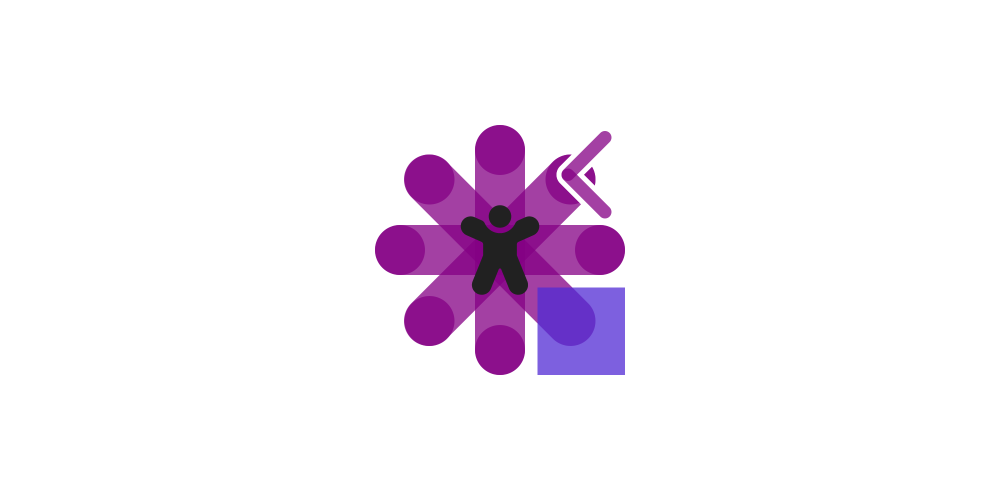
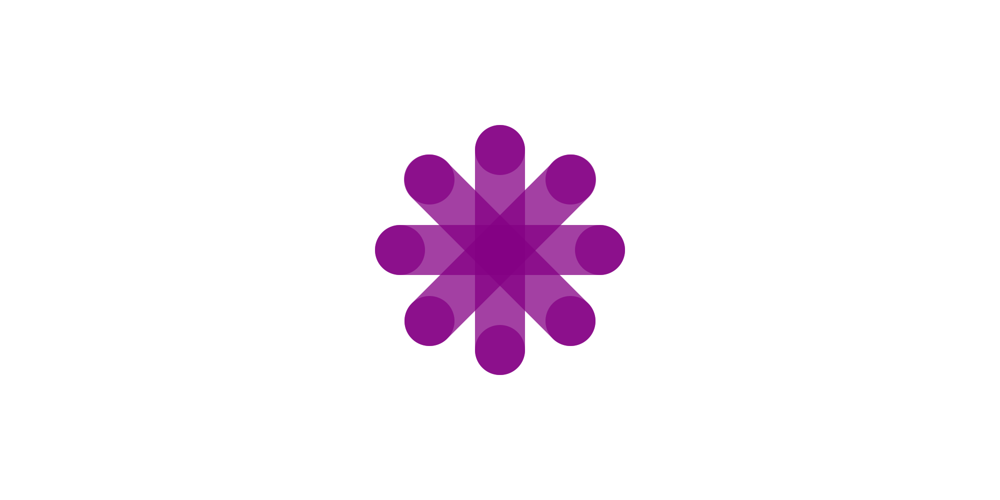

RoguePlanetoid Weekly Update #70
30th September 2024

Last week it was amazing to be at the Tremula Festival which was a celebration of audio storytelling, outdoors, nature
and community along with attending CrimeCon London 2024 where I helped represent the Scottish Murders podcast. Both events
were interesting and informative and learned so much from them with plenty of new people to speak to and meet as well as catch up with a few familiar faces along with Writing
an Article about both events.
Last week after getting back from the events it was good to start working on part of a new project as well as thinking about another new project - both of which will help people
learn new things or get them started so will be great to work on those and will share more details when I can. This month has been amazing after receiving the
Microsoft MVP Award at the start of the month which included doing my first presentation as a Microsoft MVP at the
Qudos .NET Meetup in Newcastle talking about Windows 11 Widgets where I joined
Andy Morrell who talked about ADHD in a Software Development Environment. Not only did I cover these with an
Article but there is also now a Video on YouTube if you want to watch my
talk there!
Next week will see the next Episode of the RoguePlanetoid Podcast about the Microsoft MVP Award where I talk about
my journey as a software developer as there's not much I can share about my experiences of the programme itself but hope my journey and experiences will help inspire others
to aspire to do the same. Talking of Inspiration, I also mention briefly my new upcoming project which I'll be sharing soon along with slipping in a reference to something
from an upcoming project I have been helping with which I also can't wait to talk about soon too!
RoguePlanetoid Weekly Update #69
16th September 2024
Last week was another busy week with more work on a project I've been helping with which I'm looking forward to talking more about in the future,
but it has been an interesting experience to be part of so far and can't wait to share more about it when I can. Also, the excitement of becoming
a Microsoft MVP hasn't faded and
still catch myself smiling to myself when I see the trophy on my shelves, and it is thanks to the community it is there and look forward to doing
more for the community in return!
Last week I've been working away on my new presentation, Writing Windows 11 Widgets, which will be at the
.NET Meetup - Newcastle later this month on the 24th of September at BJSS in Newcastle upon Tyne. I'm really
looking forward to my first talk as a Microsoft MVP and joining Andy Morell who will be
talking about ADHD in a Development Environment so it should be an interesting event and if you can join us
then you can sign up at meetup.com/dotnetmeetupnorth/events/303370422.
This week will be another busy one where I'll be working on yet another project which will be a brand-new Podcast and look forward
to sharing more about that very soon! Podcasting will also be the theme later this week when I will be heading down to Brighton for an event about
outdoor podcasting followed by Crimecon where I'll be representing
Scottish Murders there with some giveaways for those coming along!
There won't be a weekly update this weekend due to attending these events but look forward to getting back into things here and my own projects
again when I get back!
My Microsoft MVP Award Arrives!
9th September 2024

I was proud and honoured to have become a Microsoft MVP for .NET and Windows Development at the start of this month recognising my contributions to the technical community,
which has been helped by those in the community and my now fellow MVPs which is much appreciated! Today I received the MVP Award itself, which was amazing to unbox and put
on my shelf this morning, as I've never received a physical award before, the closest I've ever come was an award at my high school where I came second to winning for efforts
and achievements. However, the person who won that award was a friend of mind who deserved it so very much more, they helped spur me on and put me on the road to further
achievements in my life which resulted in many opportunities and experiences with the most recent of which becoming a Microsoft MVP!
I've caught myself looking at the award on my shelf a few times today, something I've only seen in photos I've liked on social media from other or previous recipients,
which has always and remains a fantastic thing to see and is amazing to see people grow and receive their email that they have become a Microsoft MVP and been so pleased
to have become one myself. I'll always remember this time as I gaze at that award and use it to spur me on more to help inspire others who may one day achieve their own
goals in the community and get their email and put an award on their own shelf as they join me in becoming a Microsoft MVP!
MVP Award Inner Box Sleeve
MVP Award Inner Box Removed
RoguePlanetoid Weekly Update #68
8th September 2024
Last week was an incredible week when I found out I'd received the MVP Award for .NET and Windows Development and it
is great to see my Profile on their website! It has been
something I've always wanted to achieve as I've looked up to those in the MVP community as they have helped inspire me and get me where I am today and
am grateful for the opportunity to become one myself and help inspire others as I was inspired. I'm looking forward to doing so much more for the community and appreciate
all the help and support that has got me where I am today and proud to help and support others.
Last week saw the release of version 2.1.0 of Comentsys.Toolkit.WindowsAppSdk
on NuGet which included some updates to the Widget functionality to support customisable Windows 11 Widgets. Updates for all the
Packages for Assets from
Comentsys on NuGet included updates for version 1.1.0 of
Comentsys.Toolkit and fixes to the Fluent Emoji. New Packages
for Assets were also released on NuGet including Comentsys.Assets.FluentIcons
for Regular Fluent UI System Icons and Comentsys.Assets.FluentIcons.Filled
for Filled Fluent UI System Icons.
This week I'll be working on some existing projects along with a Writing Windows 11 Widgets presentation I'll be presenting later this month which will be my
first as a Microsoft MVP! It will also be great to keep up the momentum from last week with plenty of things to work on along with new things, it has been a
great month so far and we're just a week into September!
Comentsys.Assets.FluentIcons.Filled 1.0.0 Released
6th September 2024

Today also sees the Release of version 1.0.0 of my new Assets package
of Comentsys.Assets.FluentIcons.Filled for .NET Standard 2.0 on both NuGet and open-source on
GitHub. This Initial Release of this Asset Resource
includes SVG or Scalable Vector Graphics for the Filled style of 2,599 Fluent UI System Icons
from GitHub created by Microsoft. Comentsys.Assets.FluentIcons.Filled supports customising the Filled colour of the Fluent UI System Icons
so they can be used in different ways.
It is great to release another new Assets package using .NET Standard 2.0 that delivers Fluent UI System Icons from Microsoft
in the Filled style that extends the Filled style of Assets from the Comentsys.Assets.FluentIcons package.
Comentsys.Assets.FluentIcons 1.0.0 Released
6th September 2024

Today sees the Release of version 1.0.0 of my new Assets package
of Comentsys.Assets.FluentIcons for .NET Standard 2.0 on both NuGet and open-source on
GitHub. This Initial Release of this Asset Resource
uses SVG or Scalable Vector Graphics for the Regular style of 2,599 Fluent UI System Icons
from GitHub created by Microsoft. Comentsys.Assets.FluentIcons also supports customising the colour of the Fluent UI System Icons so they can be used in a variety of ways.
It is great to release a brand new Assets package using .NET Standard 2.0 that delivers Fluent UI System Icons from Microsoft
and makes a great complement to the existing Assets packages for the Fluent Emoji including Comentsys.Assets.FluentEmoji, Comentsys.Assets.FluentEmoji.Shaded
and Comentsys.Assets.FluentEmoji.Contrast.
Comentsys.Assets.* 1.1.0 Released
4th September 2024

This week sees the Release of version 1.1.0 of the Comentsys.Assets.* packages for
Assets including Comentsys.Assets.Flags version 1.1.0
on NuGet and open-source on
GitHub and Comentsys.Assets.Games version 1.1.0
NuGet and open-source on
GitHub
updated for Comentsys.Toolkit version 1.1.0 and so was Comentsys.Assets.FluentEmoji version 1.1.0
also including Emoji Fixes available on NuGet and open-source on
GitHub. Comentsys.Assets.FluentEmoji.Contrast version 1.1.0
on NuGet and open-source on
GitHub along with Comentsys.Assets.FluentEmoji.Shaded version 1.1.0
on NuGet and open-source on
GitHub were updated for Emoji Fixes and for Comentsys.Assets.FluentEmoji version 1.1.0.
It is great to get these Assets packages updated which included some fixes to the Microsoft Fluent Emoji
that were needed to the packages using those. There was a rather disappointing looking Pile of Poo emoji that almost resulted in the updates being referred to
as such but there were a few other changes that meant that the updates could just refer to Emoji Fixes, but it would have been rather amusing to have used that name! There
hadn't been too many fixes to the Microsoft Fluent Emoji since the original Comentsys.Assets.FluentEmoji.* packages were released two years ago
but it was good to get many of those fixes into the packages using those Assets.
RoguePlanetoid Weekly Update #67
1st September 2024
This week was great to make some progress with some upcoming projects, one of which is a new Podcast I'm working on which I'll be sharing more details about
soon. I also went along to the Silicon Summer event for Silicon Mingle which was a great opportunity to catch up with people, many I hadn't
seen in a while as well as meet some new people and talk about how am helping new and existing podcasters with Cluarantonn.
There was also a chance the following morning to go along to another The Mussel Club event and make some new connections, it is great to get out and meet so
many amazing people and find out about all the things they are doing too. It is fantastic to not only be part of an amazing Tech Scene in the North East of England but be also
part of the wider small business community here.
This week ended with some amazing news which I've also posted about which was being awarded the Microsoft MVP Award for .NET and
Windows Development in recognition of the hard work I've been doing and will continue to do for the developer community not just here in the
North East of England but also in the wider community too, so was a fantastic way to end the week. RoguePlanetoid Podcast also saw the release
of the latest Episode about Windows 11 Widgets which I have been learning about for the past few weeks and hope
to speak about at an event in the future too, especially as I can now add after my name that I'm a Microsoft MVP.
Next week I'll be continuing some projects I'm working on and to built upon the things I've been doing and the recognition becoming a Microsoft MVP as well
as planning ahead for a few things I'll be doing or learning this month, so there's still plenty of work to be done but with this month already off to an amazing start and
if it continues like it has started it will be an superb September!
Comentsys.Toolkit.WindowsAppSdk 2.1.0 Released
1st September 2024

Today sees the Release of version 2.1.0 of my Toolkit of Comentsys.Toolkit.WindowsAppSdk for Windows App SDK
on both NuGet and open-source on
GitHub. This Release adds more support for Windows 11 Widgets
including helping to create customisable Widgets as well as methods that can be used when a Widget is added to or removed from the Widgets Board.
It was great to be able to release this updated Comentsys.Toolkit.WindowsAppSdk the same day that I received my Microsoft MVP award, which
didn't even take into account this newly updated package, but is my way of helping Windows App SDK developers using .NET everywhere who
want to create Windows 11 Widgets.
Awarded Microsoft MVP for .NET & Windows Development
1st September 2024
Today it was fantastic to see that I had received the MVP (Most Valuable Professional Award) from Microsoft for .NET
and Windows Development. The MVP Award is there to recognise the exceptional contributions from those in the Microsoft technical
community for their expertise, leadership, speaking experience, influence and commitment to solving issues that impact people in their lives. I am both honoured and
humbled to have received this award today and become a Microsoft MVP!
I've been a software developer for over thirty years starting out on my Commodore 64 coding in BASIC, then moving more toward the
Microsoft ecosystem with Visual Basic 6 before finally witnessing the arrival of .NET with the original .NET Framework which I have
witnessed grow from its roots to the modern .NET it is today which has included over twenty years of professional experience as a developer first using
VB.NET and mostly to now using C#.
I've seen platforms come and go that use .NET but always been willing to share what I know from day one with tutorials or help people get started or progress in their careers
or get interested in development with my workshops. I've also shared what I know over the years with my presentations which now next to my name can put that I am a
Microsoft MVP!
RoguePlanetoid Podcast - Episode Twenty - Windows 11 Widgets
1st September 2024

Today sees the release of Episode Twenty of the RoguePlanetoid Podcast
about Windows 11 Widgets, Windows 11 Widgets are a convenient and glanceable
way to keep you informed and productive without interrupting your workflow.
You will find the Podcast where you listen to your podcasts such as Spotify,
Amazon Music, RadioPublic, Apple Podcasts, Pandora,
YouTube Music along with YouTube where you can catch up with previous episodes
and Subscribe or Follow so you don't miss any future Episodes.